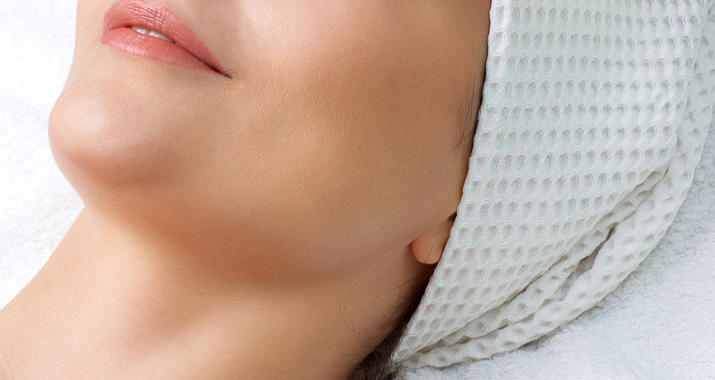
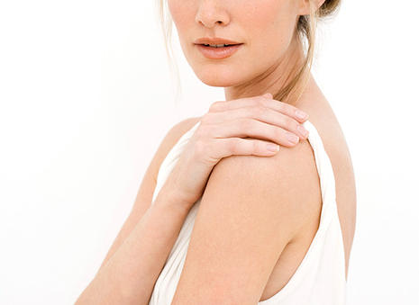
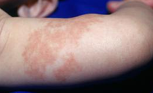
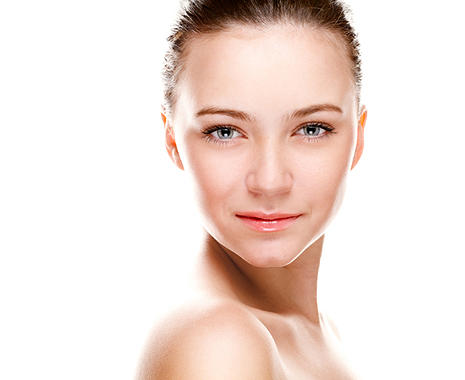
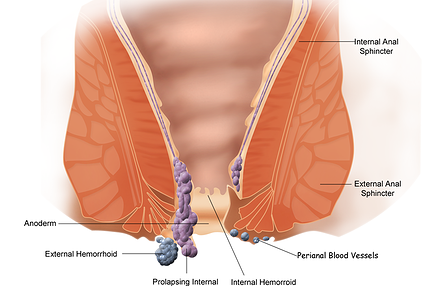
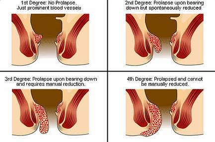
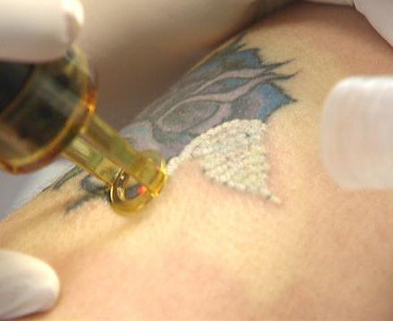

JLSC
Jordan Laser Surgical Center
مركز الأردن لجراحة الليزر
الحالات الطبية
المشاكل الجلدية

بما في ذلك:
- جميع التشوهات على شكل بقع ملونة على الجلد
- الوحمات البنية ( وحمة القهوة بالحليب ) (cafe Au Lait)
- وحمة الصباغ الخمري (Port wine stain)
- فرط تصنع الخلايا الصبغية الجلدي (Nevas of ota)
- الكلف والنمش
- جميع أنواع الوحمات والتصبغات
- جميع أنواع الزوائد و النتئات الجلدية
جميع مشاكل البشرة التي تتطلب تدخل جراحي أو علاج بالليزر مثل المذكورة هنا الى اليسار يمكن علاجها باستخدام أحدث أجهزة الليزر في JLSC أو جراحيا بعد الحصول على الاستشارة اللازمة مع الدكتور إبراهيم جعافرة .

Port wine stane
Nevas of ota
Nevas
Cafe au lait
الزوائد الجلدية

تضمن ما يلي :
- الثواليل
- الأورام الليفية
- لأورام اللقمية
- الزوائد الجلدية
- ورم الفراولة الوعائي
جميع مشاكل البشرة التي تتطلب تدخل جراحي أو علاج بالليزر مثل المذكورة هنا الى اليسار يمكن علاجها باستخدام أحدث أجهزة الليزر في JLSC أو جراحيا بعد الحصول على الاستشارة اللازمة مع الدكتور إبراهيم جعافرة .
الثواليل
الزوائد الجلدية
الأورام الليفية
ورم الفراولة الوعائي
المشاكل الشرجية
هنا في مركز الاردن لجراحة الليزر JLSC نحن نقدم احدث طرق العلاج
بالليزر والعلاجات الجراحية لجميع المشاكل الشرجية مثل الباسور والناسور وغيرها


- الباسور
- الناسور
- الشقوق الشرجية
- تكتلات شرجية
البواسير
ما هي البواسير ؟البواسير هي تورم الأوردة في قناة الشرج . هذه مشكلة شائعة ويمكن أن تكون مؤلمة ، لكنها عادة ليست خطيرة.
ما هي أسباب البواسير ؟الكثير من الضغط على الأوردة في منطقة الحوض و المستقيم يسبب البواسير . عادة الأنسجة داخل فتحة الشرج يملأها الدم للمساعدة في السيطرة على حركات الأمعاء . إذا كنت تجهد للتخلص من البراز، هذه الزيادة في الضغط تتسبب في جعل الأوردة في هذه الأنسجة منتفخة و متوسعة. يمكن أن يسبب هذا بحصول الباسور. الإسهال أو الإمساك يمكن أن يؤدي إلى الباسور أيضاّ . النساء الحوامل يمكن أن يصيبهم الباسور أثناء الأشهر الستة الأخيرة من الحمل . هذا بسبب زيادة الضغط على الأوعية الدموية في منطقة الحوض . زيادة الوزن يمكن أن تؤدي أيضا إلى البواسير.
ما هي الأعراض؟
الأعراض الأكثر شيوعا للبواسير وتشمل كلا من :
البواسير الداخلية هي غير مؤلمة عادة ولكن يمكن أن يتسبب في حدوث نزيف .
البواسير الداخلية و الخارجية
البواسير الداخلية غالبا ما تكون أوردة متورمة صغيرة في جدار القناة الشرجية . ولكنها يمكن أن تكون كبيرة ، ومتدلية من فتحة الشرج في كل وقت. يمكن أن تكون مؤلمة في حالة خروجها وقيام عضلات الشرج بالضغط عليها. ويمكن أن تكون مؤلمة جدا إذا تم قطع إمدادات الدم عن البواسير . يمكنك أن ترى المخاط على ورق التواليت أو البراز في بعض الحالات .
البواسير الخارجية يمكن أن تتماسك لتكون تورم مؤلم وقاس. وهذا ما يسمى باسور متخثر.
كيف يتم تشخيص البواسير ؟
بناء على التاريخ الصحية للمريض ومن خلال الفحص السريري .
ولمعرفة المزيد يرجى الدخول على مقالة الباسور الشرجي.
الخراج الشرجي أو الناسور Anal abscess or Fistula
الخراج الشرجي هو تجويف ملتهب مليئ بالقيح يتواجد بالقرب من فتحة الشرج أو المستقيم.
ما هو الناسور الشرجي ؟
الناسور الشرجي هو في كثير من الأحيان نتيجة لخراج شرجي (دمل) سابق أو حالي ، والتي تحدث في ما يصل الى 50 ٪ من المرضى الذين يعانون من الدمامل . تتواجد بعض الغدد الصغيرة فقط داخل فتحة الشرج وفي بعض الأحيان يحصل انسداد في هذه الغدد وربما التهاب مما يؤدي إلى الناسور . الناسور هو نفق يتشكل تحت الجلد ويربط الغدد المصابة إلى خراج . الناسور يمكن أن يكون موجود مع أو بدون وجود خراج وقد يكون متصل فقط على الجلد من الأرداف بالقرب من فتحة الشرج . وتشمل الحالات الأخرى التي يمكن أن تؤدي إلى مرض الناسور مرض كرون والإشعاع ، والصدمات النفسية .
ما هي علامات أو أعراض الناسور ؟
مريض الناسور قد يعاني من الألم ، احمرار أو تورم في المنطقة حول منطقة الشرج . التعب ، والشعور بالضيق العامة ، فضلا عن الحمى أو القشعريرة أيضا من الأعراض الشائعة ، مع إضافة امكانية حدوث تهيج الجلد حول الشرج أو وجود تصريف للخراج من فتحة خارجية.
كيفية تشخيص الناسور ؟
يتم تشخيص معظم خراجات الشرج أو الناسور بناء على الاختبارات السريرية. في بعض الأحيان استخدام الموجات فوق الصوتية والأشعة المقطعية CT scan، أو التصوير بالرنين المغناطيسي MRI يساعد في تشخيص الخراجات العميقة أو رسم مسار الناسور للمساعدة في العلاج .
إزالة الوشم بالليزر

يزيل الليزر الوشم عن طريق تكسير الأصباغ الملونة المكونة للوشم عن طريق شعاع ضوئي عالي الكثاف. الصباغ الأسود يمتص كل موجات الليزر، مما يجعله الأسهل للعلاج. باقي الألوان تعالج على موجات محددة و قد تستلزم أجهزة مختلفة بناء على اللون.
كم عدد الجلسات التي أحتاج إليها؟
عدد الجلسات يعتمد على حجم ولون الوشم الخاص بك . قد تتم إزالة الوشم في 2-4 جلسات، على الرغم من أن الحاجة لعدد أكبر من الجلسات قد تكون ضرورية في بعض الحالات.
العلاج بالليزر يختلف من مريض لآخر تبعا لعمر وحجم ونوع الوشم. بالإضافة للون جلد المريض، فضلا عن العمق الذي يمتد إليه صباغ الوشم.
توضع النظارات الواقية للعينين ويتم اختبار الليزر على رقعة صغيرة من الجلد للتأكد من رد فعل الجلد لليزر و لتحديد مستوى الطاقة الأكثر فعالية لتلقي العلاج.
العلاج نفسه يتكون من وضع القطعة المخصصة من الجهازعلى سطح الجلد وتفعيل الجهاز ليبدأ باعطاء ومضات الضوء. عدد الومضات المطلوبة تعتمد على حجم الوشم فكلما كان الوشم أكبر احتجنا الى عدد اكبر من الومضات.
مباشرة بعد العلاج، يتم وضع كيس من الثلج لتهدئة المنطقة المعالجة. وبعد ذلك يطلب من المريض وضع كريم مضاد حيوي موضعي. يتم استخدام ضمادة لحماية مكان الوشم كما ينبغي استخدام واقي الشمس على المنطقة عند الخروج لحمايتها في معظم الحلات ليس هناك حاجة لأي تخدير. ومع ذلك، قد يتم استخدام نعض أنواع التخدير بناء على مكان الوشم واحتمال المريض للألم.
أجهزتنا
LASEmaR 500
LASEmaR 800
LASEmaR 1500
التوابع و المستلزمات
Air Cooler
pumb for antesia
Veinlite
.jpg)
Veinlite
Light Scan
Autoclave
Vascular Color Echodoblar
Echodoblar and Electrical coach
Tatto Removal
bypular Electrocutary
Exo Radiofrequecny for spider V.V
intraocular protective lence
Goggles
Goggle
 Facebook
Facebook